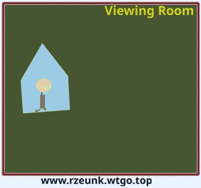

The experience of transition disappointed him, what Noah expected was the first eye to the empire. He run to the viewing room from time to time. The steel window covers roll up at specific times. These times he would stay there, watching the twinkling stars and admiring the incredible haziness of the star clusters, as if a large group of fireflies were forever confined in one place. For a while, within a seven-light-year radius around the starship, there were cold, blue-white gas nebulae scattered like milk on the glass Windows, bringing a hint of chill to the observation room. Two hours later, the starship made another leap and the clouds vanished without a trace at once.
Sep 21, 2026